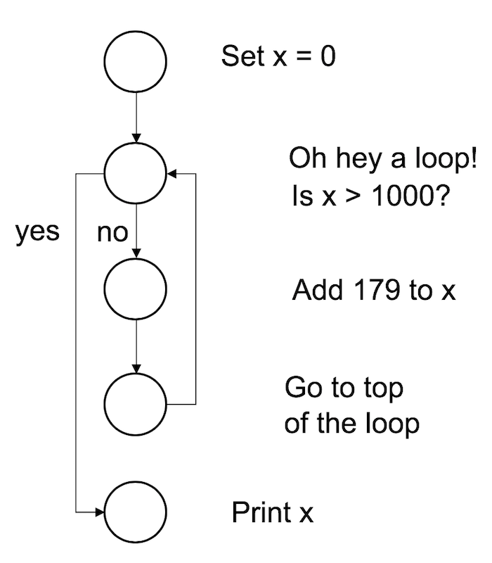

- Loops
Back when I introduced scripts I said that R starts at the top of the file and runs straight through to the end of the file. That was a tiny bit of a lie. It is true that unless you insert commands to explicitly alter how the script runs, that is what will happen. However, you actually have quite a lot of flexibility in this respect. Depending on how you write the script, you can have R repeat several commands, or skip over different commands, and so on. This topic is referred to as flow control.
The first kind of flow control that I want to talk about is a loop. The idea is simple: a loop is a block of code (i.e., a sequence of commands) that R will execute over and over again until some termination criterion is met. To illustrate the idea, here’s a schematic picture showing the difference between what R does with a script that contains a loop and one that doesn’t:

Looping is a very powerful idea, because it allows you to automate repetitive tasks. Much like my children, R will execute an continuous cycle of “are we there yet? are we there yet? are we there yet?” checks against the termination criterion, and it will keep going forever until it is finally there and can break out of the loop. Rather unlike my children, however, I find that this behaviour is actually helpful.
There are several different ways to construct a loop in R. There are two methods I’ll talk about here, one using the while command and another using the for command.
7.1 The while loop
A while loop is a simple thing. The basic format of the loop looks like this:
while ( CONDITION ) {
STATEMENT1
STATEMENT2
ETC
}The code corresponding to condition needs to produce a logical value, either TRUE or FALSE. Whenever R encounters a while statement, it checks to see if the condition is TRUE. If it is, then R goes on to execute all of the commands inside the curly brackets, proceeding from top to bottom as usual. However, when it gets to the bottom of those statements, it moves back up to the while statement. Then, like the mindless automaton it is, it checks to see if the condition is TRUE. If it is, then R goes on to execute all the commands inside … well, you get the idea. This continues endlessly until at some point the condition turns out to be FALSE. Once that happens, R jumps to the bottom of the loop (i.e., to the } character), and then continues on with whatever commands appear next in the script.
7.1.1 A simple example
To start with, let’s keep things simple, and use a while loop to calculate the smallest multiple of 179 that is greater than or equal to 1000. This is of course a very silly example, since you can calculate it using simple arithmetic, but the point here isn’t to do something novel. The point is to show how to write a while loop. Here’s the code in action:
x <- 0
while(x < 1000) {
x <- x + 179
}
print(x)## [1] 1074When we run this code, R starts at the top and creates a new variable called x and assigns it a value of 0. It then moves down to the loop, and “notices” that the condition here is x < 1000. Since the current value of x is zero, the condition is TRUE, so it enters the body of the loop (inside the curly braces). There’s only one command here, which instructs R to increase the value of x by 179. R then returns to the top of the loop, and rechecks the condition. The value of x is now 179, but that’s still less than 1000, so the loop continues. Here’s a visual representation of that:

To see this in action, we can move the print statement inside the body of the loop. By doing that, R will print out the value of x every time it gets updated. Let’s watch:
x <- 0
while(x < 1000) {
x <- x + 179
print(x)
}## [1] 179
## [1] 358
## [1] 537
## [1] 716
## [1] 895
## [1] 1074Truly fascinating stuff. 🤔
7.1.2 Mortgage calculator
To give you a sense of how you can use a while loop in a more complex situation, let’s write a simple script to simulate the progression of a mortgage. Suppose we have a nice young couple who borrow $300000 from the bank, at an annual interest rate of 5%.1 The mortgage is a 30 year loan, so they need to pay it off within 360 months total. Our happy couple decide to set their monthly mortgage payment at $1600 per month. Will they pay off the loan in time or not? Only time will tell.
Or, alternatively, we could simulate the whole process and get R to tell us. The code to run this is a little more complicated, so we’ll keep it all in a script called mortgage.R.
# setup
month <- 0 # count the number of months
balance <- 300000 # initial mortgage balance
payments <- 1600 # monthly payments
interest <- 0.05 # 5% interest rate per year
total_paid <- 0 # track what you’ve paid the bank
# convert annual interest to a monthly multiplier
monthly_multiplier <- (1 + interest) ^ (1/12)
# keep looping until the loan is paid off...
while(balance > 0){
# do the calculations for this month
month <- month + 1# one more month
balance <- balance * monthly_multiplier # add the interest
balance <- balance - payments # make the payments
total_paid <- total_paid + payments # track the total paid
# print the results on screen
cat("month", month, ": balance", round(balance), "\n")
}
# print the total payments at the end
cat("total payments made", total_paid, "\n")To explain what’s going on, let’s go through this script line by line. In the first part of the code, all we’re doing is specifying the variables that define the problem:
month <- 0 # count the number of months
balance <- 300000 # initial mortgage balance
payments <- 1600 # monthly payments
interest <- 0.05 # 5% interest rate per year
total_paid <- 0 # track what you’ve paid the bankThe loan starts with a balance of $300,000 owed to the bank on month zero, and at that point in time the total_paid money is nothing. The couple is making monthly payments of $1600, at an annual interest rate of 5%.
The next step is to convert the annual percentage interest into a monthly multiplier. That’s this line:
monthly_multiplier <- (1 + interest) ^ (1/12)If you’re like me and somehow have a panic attack every time someone asks you to do calculations with money, it might help to unpack this line a bit. What we’re trying to calculate here is a number (monthly_multiplier) that we would have to multiply the current balance by each month in order to produce an annual interest rate of 5%. An annual interest rate of 5% implies that, if no payments were made over 12 months the balance would end up being 1.05 times what it was originally, so the annual multiplier is 1.05. To calculate the monthly multiplier, we need to calculate the 12th root of 1.05 (i.e., raise 1.05 to the power of 1/12). We store this value in as the monthly_multiplier variable, which as it happens corresponds to a value of about 1.004. All of which is a rather long winded way of saying that the annual interest rate of 5% corresponds to a monthly interest rate of about 0.4%.
Have I mentioned how much I hate financial calculations?
Anyway… all of that is really just setting the stage. The interesting part of the script is the loop. The while statement tells R that it needs to keep looping until the balance falls below zero. If we strip out the frills, the loop looks like this:
while(balance > 0){
month <- month + 1 # one more month
balance <- balance * monthly_multiplier # add the interest
balance <- balance - payments # make the payments
total_paid <- total_paid + payments # track the total paid
}Firstly we increase the value month by 1. Next, the bank charges the interest, so the balance goes up. Then, the couple makes their monthly payment and the balance goes down. Finally, we keep track of the total amount of money that the couple has paid so far. After having done this number crunching, we tell R to issue the couple with a very terse monthly statement (that’s one of the frills I removed), indicating indicates how many months they’ve been paying the loan and how much money they still owe the bank. Which is rather rude of us really. I’ve grown attached to this couple and I really feel they deserve better. I guess that’s banks for you.
In any case, the key thing here is the tension between the increase in balance due to interest and the decrease due to repayments. As long as the decrease is bigger, then the balance will eventually drop to zero and the loop will eventually terminate. If not, the loop will continue forever! This is very bad programming on my part: I should have included something to force R to stop if this goes on too long. For now, we’ll just have to hope that the author has rigged the example so that the loop actually terminates. Hm. I wonder what the odds of that are?
Anyway, assuming that the loop does eventually terminate, there’s one last line of code that prints the total amount of money that the couple handed over to the bank over the lifetime of the loan.
Now that I’ve explained everything in the script in tedious detail, let’s run it and see what happens:
source("./scripts/mortgage.R")## month 1 : balance 299622
## month 2 : balance 299243
## month 3 : balance 298862
## month 4 : balance 298480
## month 5 : balance 298096
## month 6 : balance 297710
## month 7 : balance 297323
## month 8 : balance 296934
## month 9 : balance 296544
## month 10 : balance 296152
BLAH BLAH BLAHBLAH BLAH BLAH
## month 352 : balance 4806
## month 353 : balance 3226
## month 354 : balance 1639
## month 355 : balance 46
## month 356 : balance -1554
## total payments made 569600So our nice young couple have paid off the $300,000 loan just 4 months shy of the 30 year term of their mortgage, all at a bargain basement price of $568,046.
A happy ending! 🎉 🎈 🍰
7.2 The for loop
The for loop is also pretty simple, though not quite as simple as the while loop. The basic format of this loop goes like this:
for ( VAR in VECTOR ) {
STATEMENT1
STATEMENT2
ETC
}In a for loop, R runs a fixed number of iterations. We have a vector which has several elements, each one corresponding to a possible value of the variable var. In the first iteration of the loop, var is given a value corresponding to the first element of vector; in the second iteration of the loop var gets a value corresponding to the second value in vector; and so on. Once we’ve exhausted all of the values in the vector, the loop terminates and the flow of the program continues down the script.
7.2.1 Multiplication tables
When I was a kid we used to have multiplication tables hanging on the walls at home, so I’d end up memorising the all the multiples of small numbers. I was okay at this as long as all the numbers were smaller than 10. Anything above that and I got lazy. So as a first example we’ll get R to print out the multiples of 137. Let’s say I want to it to calculate \(137 \times 1\), then \(137 \times 2\), and so on until we reach \(137 \times 10\). In other words what we want to do is calculate 137 * value for every value within the range spanned by 1:10, and then print the answer to the console. Because we have a fixed range of values that we want to loop over, this situation is well-suited to a for loop. Here’s the code:
for(value in 1:10) {
answer <- 137 * value
print(answer)
}## [1] 137
## [1] 274
## [1] 411
## [1] 548
## [1] 685
## [1] 822
## [1] 959
## [1] 1096
## [1] 1233
## [1] 1370The intuition here is that R starts by setting value to 1. It then computes and prints 137 * value, then moves back to the top of the loop. When it gets there, it increases value by 1, and then repeats the calculation. It keeps doing this until the value reaches 10 and then it stops. That intuition is essentially correct, but it’s worth unpacking it a bit further using a different example where R loops over something other than a sequence of numbers…
7.2.2 Looping over other vectors
In the example above, the for loop was defined over the numbers from 1 to 10, specified using the R code 1:10. However, it’s worth keeping in mind that as far as R is concerned, 1:10 is actually a vector:
1:10## [1] 1 2 3 4 5 6 7 8 9 10So in the previous example, the intuition about the for loop is slightly misleading. When R gets to the top of the loop the action it takes is “assigning value equal to the next element of the vector”. In this case it turns out that this action causes R to “increase value by 1”, but that’s not true in general. To illustrate that, here’s an example in which a for loop iterates over a character vector. First, I’ll create a vector of words:
words <- c("it", "was", "the", "dirty", "end", "of", "winter")Now what I’ll do is create a for loop using this vector. For every word in the vector of words R will do three things:
- Count the number of letters in the word
- Convert the word to upper case
- Print a nice summary to the console
Here it is:
for(this_word in words) {
n_letters <- nchar(this_word)
block_word <- toupper(this_word)
cat(block_word, "has", n_letters, "letters\n")
}## IT has 2 letters
## WAS has 3 letters
## THE has 3 letters
## DIRTY has 5 letters
## END has 3 letters
## OF has 2 letters
## WINTER has 6 lettersFrom the perspective of the R interpreter this is what the code four the for loop is doing. It’s pretty similar to the while loop, but not quite the same:

7.2.3 Vectorised code?
Of course, there are ways of doing this that don’t require you to write the loop manually. Because many functions in R operate naturally on vectors, you can take advantage of this. Code that bypasses the need to write loops is called vectorised code, and there are some good reasons to do this (sometimes) once you’re comfortable working in R. Here’s an example:
chars <- nchar(words)
names(chars) <- toupper(words)
print(chars)## IT WAS THE DIRTY END OF WINTER
## 2 3 3 5 3 2 6Sometimes vectorised code is easy to write and easy to read. I think the example above is pretty simple, for instance. It’s not always so easy though!
When you go out into the wider world of R programming you’ll probably encounter a lot of examples of people talking about how to vectorise your code to produce better performance. My advice for novices is not to worry about that right now. Loops are perfectly fine, and it’s often more intuitive to write code using loops than using vectors. Eventually you’ll probably want to think about these topics but it’s something that you can leave for a later date!
7.2.4 For the love of turtles
One of the things I used to find annoying about writing notes for programming classes is that programs are fundamentally dynamic things. They do stuff, and if you want to have a good feel for how they work you really do need to see the action happening. In contrast, lecture notes are - traditionally - static things. It’s just a fixed set of words. Except… this is the internet, so I can include animations!
If you recall, back when I introduced packages I installed the TurtleGraphics package from my GitHub page. Turtle graphics is a classic teaching tool in computer science, originally invented in the 1960s and reimplemnented over and over again in different programming languages. Let’s load that package.
library(TurtleGraphics)Here’s the idea. You have a turtle, and she lives in a nice warm terrarium:
turtle_init() Your job is to give her instructions, to program her to undertake certain actions. So for example, you can use the
Your job is to give her instructions, to program her to undertake certain actions. So for example, you can use the turtle_forward command to get her to walk forwards, the turtle_left command to get her to rotate to the left, and so on. For example, if I used this command my turtle would walk forward 10 steps and leave a trail behind her showing the path she took.
turtle_forward(distance = 10)That seems simple enough, but what if I want my turtle to draw a more complicated shape? Let’s say I want her to draw a hexagon. There are six sides to the hexagon, so the most natural way to write code for this is to write a for loop that loops over the sides! At each iteration within the loop, I’ll have the turtle walk fowards, and then turn 60 degrees to the left. Here’s what happens:
turtle_init() for(side in 1:6) {
turtle_forward(distance = 10)
turtle_left(angle = 60)
}Yay for turtles! Everybody loves turtles! 🐢🐢🐢🐢🐢🐢
7.3 Exercises
To start with, here are some exercises with for loops and turtles:
- Use TurtleGraphics to draw a square rather than a hexagon
- Use TurtleGraphics to draw a triangle.
- Is there a way in which you can get R to automatically work out the
anglerather than you having to manually work it out?
As an exercise in using a while loop, consider this vector:
telegram <- c("All","is","well","here","STOP","This","is","fine")- Write a
whileloop that prints words fromtelegramuntil it reachesSTOP. When it encounters the wordSTOP, end the loop. So what you want is output that looks like this.
## [1] "All"
## [1] "is"
## [1] "well"
## [1] "here"
## [1] "STOP"The solutions for these exercises are here.
I love that I wrote this when living in a city where $300000 felt like a semi-plausible number, rather than way, way too small. Sydney real estate is absurd.↩